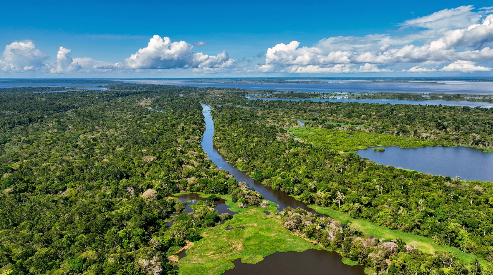
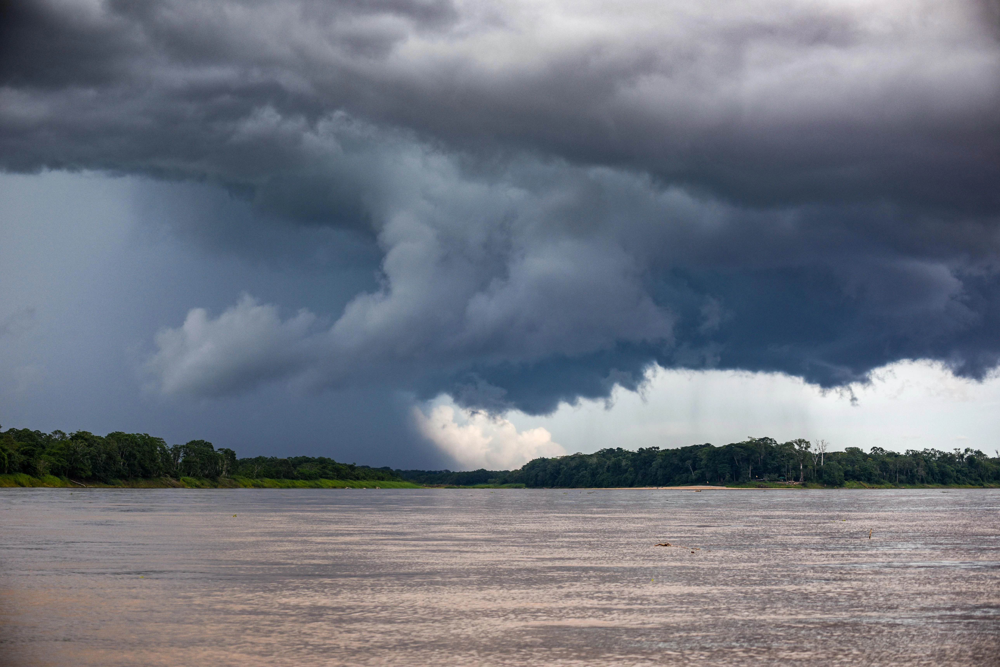

Norte
Teatro Amazonas - Manaus, Amazonas.
Sobre a região
A Região Norte é a maior região do Brasil em extensão territorial, ocupando quase metade do território nacional. É conhecida principalmente por abrigar a maior floresta tropical do mundo, a Amazônia, que possui enorme biodiversidade e importância ambiental para o planeta. A região é marcada por extensas áreas de floresta, rios caudalosos e uma rica diversidade cultural formada pela influência de povos indígenas, ribeirinhos, nordestinos e imigrantes de diferentes partes do país.

Área
3.869.637 km²
45,2% do território brasileiro.
População
18,6 milhões
8,7% da população brasileira.
Quantidade de estados
7 estados
Acre, Amapá, Amazonas, Pará, Roraima, Rondônia e Tocantins.
Capital de referência
Manaus (AM)
Maior cidade da região e importante centro econômico e cultural
Características geográficas

Características climáticas
